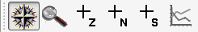
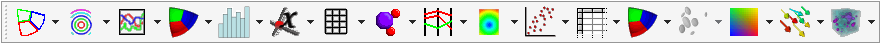
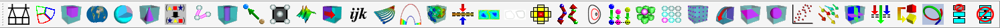
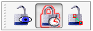

6.4. The Popup menu and the Toolbar¶
Each vis window contains a Popup menu and a Toolbar, which can be used to perform several categories of operations such as window management, setting the window mode, activating tools, manipulating the view, or playing animations. Options in the Popup menu exist in the Toolbar and vice-versa. A group of actions that is represented in the Popup menu as a menu usually maps to a toolbar in the vis window’s Toolbar. To perform an action using the Toolbar, you can just click on its buttons. Access the Popup menu by pressing the right mouse button in the vis window. Select the desired item, then release the mouse button.
6.4.1. Hiding toolbars¶
The Popup menu has a Customize menu that lets you customize the vis window’s Toolbar. For instance, you can choose to hide all of the toolbars so that they do not take up any of your screen space if you use a small monitor. If you want to hide all toolbars, you can select the Hide toolbars option from the Customize menu. If you want to show the toolbars again, you can click the Show toolbars option in the Customize menu. Note that when you select the Show toolbars option, VisIt only shows the toolbars that were enabled before they were hidden. If you want to enable or disable individual toolbars, you can select from the Toolbars menu under the Customize menu so VisIt only shows the toolbars that you routinely need. Once you tell VisIt which toolbars you want to use, you can save your preferences using the Save settings option in the Main Window’s Options menu so that the next time you run VisIt, it only shows the toolbars that you enabled.

Fig. 6.9 Customize menu
6.4.2. Moving toolbars¶
Each of the vis window Toolbar’s smaller toolbars can be moved to other edges of the vis window by clicking the small tab on the left or top side of the toolbar and dragging it to other edges of the vis window.
6.4.3. Switching window modes¶
The Popup menu contains a Mode menu (see Figure 6.10) that contains the 5 window modes. You can select a window mode from the Mode menu to change the vis window’s mode. If you want to move or zoom the plot, choose navigate or zoom modes. If you want to extract data from the plots in the vis window, choose lineout mode or one of the pick modes. You can also use the Mode toolbar to change the vis window’s window mode.

Fig. 6.10 Mode toolbar and menu
6.4.4. Activating tools¶
The Popup menu contains a Tools menu (see Figure 6.11) that lists of all of VisIt’s interactive tools. Each tool shown in the menu has an associated icon that is used to indicate if the tool is enabled and if it is available in the vis window. Some tools are not available if the vis window does not contain plots or if the plots in the vis window are the wrong dimension to be used with the tool. In that event, the tool cannot be activated and the menu and toolbar entries for that tool are disabled. If a tool is available, its icon is bright blue; otherwise the icon is grayed out. If a tool is enabled, its icon has a selection rectangle around it. To activate a tool, choose an inactive tool from the Tools menu or click on its button in the Toolbar. To deactivate a tool, choose the tool that you want to deactivate from the Tools menu or click on its button in the Toolbar.

Fig. 6.11 Tool toolbar and menu
6.4.5. View options¶
VisIt’s Popup menu and Toolbar (see Figure 6.12) have several options that are available for manipulating the view. You can reset the view, recenter the view, undo a view change, toggle perspective viewing, save and reuse useful views, or choose a new center of rotation.


Fig. 6.12 View toolbar and menu
6.4.5.1. Resetting the view¶
The Popup menu has a Reset view option (see Figure 6.12) that resets the view used to view the plots in the vis window. The view is typically reset to look down the -Z axis in a right-handed coordinate system. You can reset the view by selecting the Reset view option from the Popup menu or by clicking on the Reset view icon in the Toolbar.
6.4.5.2. Recentering the view¶
Sometimes adding a plot to a vis window that already contains plots can result in a lop-sided visualization. This happens when the spatial extents of the plots do not match. The Popup menu has a Recenter view option (see Figure 6.12) to calculate a new center of rotation for the plots so they are drawn in the center of the window. You can also recenter the view by clicking on the Recenter view icon in the Toolbar. To make sure that the view updates appropriately when new plots are added to the vis window, you may also want to check the Auto center view check box that is available in the View Window .
6.4.5.3. Undo view¶
The vis window saves the last ten views in a buffer so that you can restore them if you make an unintended change to the view. You can undo a view change, by selecting the Undo view option in the Popup menu’s View menu or by clicking the Undo view icon in the Toolbar (see Figure 6.12).
6.4.5.4. Changing view perspective¶
Fig. 6.13 Perspective examples
When the vis window contains 3D plots, the perspective setting can be used to enhance how 3D the plot looks. In a perspective projection, graphics grow smaller as they recede into the distance which makes them look more realistic. To change the perspective setting, click on the Perspective option in the Popup menu’s View menu (see Figure 6.12). When the vis window uses a perspective projection, the Popup menu’s Perspective option will have a selection rectangle around its icon. You can also turn perspective on or off by clicking on the Perspective icon in the Toolbar. The difference in appearance having perspective and not having it is shown in Figure 6.13.
6.4.5.5. Locking views¶
The vis window can lock its view to other vis windows. When this toggle is set, making a change that affects the view in the active vis window will cause other vis windows that have the lock views toggle set to receive the same view as the active window. To lock the view, select the Lock view option from the Popup menu’s View menu (see Figure 6.12) or click on the Lock view icon in the Toolbar. Note that you can lock 2D and 3D windows separately.
6.4.5.6. Saving and reusing views¶
Sometimes when analyzing a database, it is useful to be able to toggle between several different views. VisIt allows you to save up to 15 views that you can then use to look at different parts of your visualization. When you navigate to a view that you like, click the Save view icon in the View toolbar or click the Save view option in the Popup menu’s View menu to save the view. When you save a view, VisIt adds a new numbered camera icon to the View toolbar and the Popup menu . Clicking on a view icon makes VisIt use the view that is associated with the clicked icon so you have one-click access to all of your saved views. You can preserve the saved views across VisIt sessions if you save your settings. If you want to delete the saved views so you can create different saved views, click the Clear saved views icon next to the Save views icon in the View toolbar.
6.4.5.7. Fullframe mode¶
Some databases yield plots that are so long and skinny that they leave most of the vis window blank when VisIt displays them. VisIt provides Fullframe mode to stretch the plots so they fill more of the vis window so it is easier to see them. It is worth noting that Fullframe mode does not preserve a 1:1 aspect ratio for the displayed plots because they are stretched in each dimension so they fit better in the vis window. To activate Fullframe mode, click on the Fullframe option in the Popup menu’s View menu.
6.4.5.8. Choosing a new center of rotation¶
When you are working with a 3D database and you have created plots and zoomed in on them, you should set the center of rotation. The center of rotation is the point about which the plots are rotated when you rotate the plots in navigate mode. Normally, the center of rotation is set to the center of the plots being visualized. When you zoom way in on plots and attempt to rotate them, the default center of rotation often causes plots to whiz off of the screen when you rotate because the center of rotation is not close enough to the geometry that you are actually viewing. To set the center of rotation to something more suitable, VisIt provides the Choose center button, which can be accessed in the Popup menu or in the View toolbar. Once you click the Choose center button, VisIt temporarily switches to pick mode so you can click on the part of your visualization that you want to become the new center of rotation. Once you click on a plot, VisIt exits pick mode and uses the picked point as the new center of rotation. After setting the center of rotation, VisIt will make sure that the picked point is visible at all times.
6.4.6. Animation options¶
The animation controls in VisIt’s Main Window are not the only controls that are provided for playing animations. Each vis window’s Popup menu and Toolbar has options for playing and stepping through animations. To play an animation, select the Play option from the Popup menu’s Animation menu or click on the Play icon in the Toolbar, shown in Figure 6.14. To play the animation in reverse, select the Reverse play option or click on the Reverse play icon in the Toolbar. To stop the animation from playing, select the Stop option in the Animation menu or click on the Stop icon in the Toolbar. If you want to advance or reverse one frame at a time, use forward or reverse step.

Fig. 6.14 Animation toolbar and menu
6.4.7. Window options¶
Many window options have previously been explained in this chapter so this section describes some addition options that were not covered. Many of the options in the Main Window’s Windows menu are also present in the Popup menu’s Window menu and toolbar (see Figure 6.15).


Fig. 6.15 Window toolbar and menu
6.4.7.1. Changing bounding-box mode¶
The vis window allows a simple wireframe box to be substituted for complex plots when you want to rotate or move them. This is called bounding-box navigation and you can use it during navigate mode for complex plots so you can navigate faster when a vis window contains plots that take a long time to redraw. You can change the bounding-box mode by selecting the Navigate bbox option from the Popup menu’s Window menu shown in Figure 6.15. You can also change the bounding-box mode by clicking on the Bounding-box icon in the Toolbar.
6.4.7.2. Engaging spin¶
Spin is a setting that makes plots spin after the user stops rotating them and it provides a nice, easy way to see the entire plot without having to actively rotate it. To spin a 3D plot, turn on the Spin option in the Popup menu’s Windows menu and then rotate the plot as you would in navigate mode. The plot will continue to spin after you release the mouse buttons. You can also engage spin using the Spin option in the Main Window’s Windows menu or by clicking the Spin icon in the vis window’s Toolbar. You can stop plots from spinning by turning off spin.
6.4.7.3. Inverting the foreground and background colors¶
Sometimes it is useful to swap the vis window’s foreground and background colors. You can invert the background and foreground colors by clicking on the Windows menu’s Invert background option. Note that this option is disabled when the vis window has a gradient background.
6.4.8. Clear options¶
The Clear menu (see Figure 6.16) in the Popup menu contains options that cause certain items such as: plots, pick points, and reference lines to be removed from a vis window. The Clear menu also appears in the Main Window’s Windows menu.

Fig. 6.16 Clear menu
6.4.8.1. Clearing plots from all windows¶
Sometimes it is useful to clear all plots from the vis window. Clearing plots from the vis window does not delete the plots but instead deletes their computed geometry and returns them to the new state so they appear green in the Plot list. An example of when you might want to clear plots is when you change material interface reconstruction options since changing them requires a plot to be regenerated. Rather than deleting plots that existed before changing the material interface reconstruction parameters, you can clear the plots and force them to be completely regenerated by clearing the plots.
6.4.8.2. Clearing pick points¶
Click on the Clear menu’s Clear pick points option if you want to remove all of the pick labels that were added when you picked on the plots in the vis window. Clearing the pick points also removes any pick information related to those pick points in the Pick window.
6.4.8.3. Clearing reference lines¶
Click on the Clear menu’s Clear reference lines option if you want to remove all of the reference lines that were added to the vis window when you performed lineouts on the plots in the vis window.
6.4.9. Plot options¶
The Plot toolbar and Plot menu let you create new plots using variables from the open databases and also let you hide, delete, and draw the plots that correspond to the selected plot entries in VisIt’s Plot list. The Plot menu is always available in the Popup menu but the Plot toolbar is not visible by default. If you want to make the Plot toolbar visible, you can turn it on in the Popup menu’s Customize menu. The Plot menu and toolbar are shown in Figure 6.17.
Fig. 6.17 Plot toolbar and menu
6.4.9.1. Adding a plot¶
The Plot menu and toolbar both provide options for you to add new plots. Each plot has its own menu option or icon that contains the variables that can be plotted from the open database. To add a new plot using the Plot menu, click the Add plot option to activate the list of available plots and then select a variable for the desired plot type. To add a new plot using the Plot toolbar, click on the icon for the desired plot type and select a variable from its variable menu. A new plot will appear in the Main Window’s Plot list and it will be in the new state. To draw the plot, click the Draw button.
6.4.9.2. Drawing a plot¶
All plots added using the Plot menu or toolbar are in the new state, indicating that they have not been generated yet. To generate a plot once it has been created, click the Draw plots option in the Plot menu.
6.4.9.3. Hiding active plots¶
To hide the active plots, which are the plots that are highlighted in the Main Window’s Plot list, click the Plot menu’s Hide active plots option. Once clicked, the selected plots are made invisible until you hide them again to show them.
6.4.9.4. Deleting active plots¶
To delete the active plots, which are the plots that are highlighted in the Main Window’s Plot list, click the Plot menu’s Hide active plots option. Once a plot has been deleted, you can’t get it back.
6.4.10. Operator options¶
The Operator menu and toolbar allow you to add new operators and remove operators from plots. The Operator menu is always available in the Popup menu but the Operator toolbar is not visible by default. If you want to make the Operator toolbar visible, you can turn it on in the Popup menu’s Customize menu. The Operator menu and Operator toolbar are shown in Figure 6.18.
Fig. 6.18 Operator toolbar and menu
6.4.10.1. Adding an operator¶
The Operator menu and toolbar both provide options for you to add new operators. Each operator has its own menu option or icon that adds an operator of that type to the selected plots when you click its menu option or icon.
6.4.10.2. Removing the last operator¶
The Operator menu and toolbar both have options for you to remove the last operator from a plot. Each plot has a list of applied operators and clicking the Remove last operator menu option or icon will remove the last operator from each plot that is selected in the Plot list. Plots that have been drawn are regenerated.
6.4.10.3. Removing all operators¶
The Operator menu and toolbar both have options for you to remove all operators from a plot. Each plot has a list of applied operators and clicking the Remove all operators menu option or icon will remove all operators from each plot that is selected in the Plot list. Plots that have been drawn are regenerated.
6.4.11. Lock options¶
The Lock menu and toolbar, both shown in Figure 6.19, allow you to lock certain visualization window attributes so that when you change them, other locked visualization windows also update. Currently, you can lock the view, time and tools. See Locking Windows for more information on how to use the lock options.

Fig. 6.19 Lock toolbar and menu